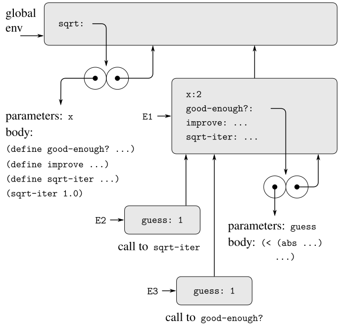
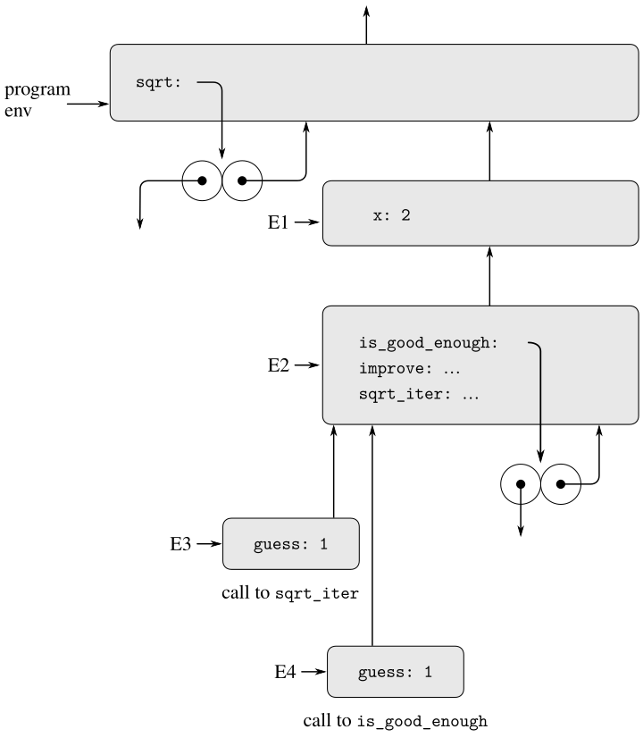

Section 1.1.8 introduced the idea that procedures functions can have internal definitions, function definitions, thus leading to a block structure as in the following procedure function to compute square roots:
| Original | Python |
| (define (sqrt x) (define (good-enough? guess) (< (abs (- (square guess) x)) 0.001)) (define (improve guess) (average guess (/ x guess))) (define (sqrt-iter guess) (if (good-enough? guess) guess (sqrt-iter (improve guess)))) (sqrt-iter 1.0)) | def sqrt(x): def is_good_enough(guess): return abs(square(guess) - x) < 0.001 def improve(guess): return average(guess, x / guess) def sqrt_iter(guess): return (guess if is_good_enough(guess) else sqrt_iter(improve(guess))) return sqrt_iter(1) |
| Original | Python | |
|

Figure 3.13
sqrt procedure with internal
definitions.
|

Figure 3.14 The
sqrt function with internal
definitions.
|
Observe the structure of the environment. Sqrt is a symbol in the global environment that is bound The name sqrt is bound in the global environment to a procedure function object whose associated environment is the global environment. When sqrt was called, a new environment, E1, was formed, subordinate to the global environment, in which the parameter x is bound to 2. The body of sqrt was then evaluated in E1.
| Original | Python | |
| Since the first expression in the body of sqrt is | Since the first statement in the body is |
| Original | Python |
| (define (good-enough? guess) (< (abs (- (square guess) x)) 0.001)) | def is_good_enough(guess): return abs(square(guess) - x) < 0.001 |
| Original | Python | |
| evaluating this expression defined the procedure good-enough? in the environment E1. | evaluating this definition created the function is_good_enough in the environment E2. |
| Original | Python | |
| To be more precise, the symbol good-enough? was added to the first frame of E1, bound to a procedure object whose associated environment is E1. | To be more precise, the name is_good_enough in the first frame of E2 was bound to a function object whose associated environment is E2. |
After the local procedures functions were defined, the expression (sqrt-iter 1.0) sqrt_iter(1) was evaluated, still in environment E1. E2. So the procedure function object bound to sqrt-iter in E1 was called with 1 as an argument. This created an environment E2 in which sqrt_iter in E2 was called with 1 as an argument. This created an environment E3 in which guess, the parameter of sqrt-iter, sqrt_iter, is bound to 1. sqrt-iter The function sqrt_iter in turn called good-enough? is_good_enough with the value of guess (from E2) as the argument for good-enough?. (from E3) as the argument for is_good_enough. This set up another environment, E3, in which guess (the parameter of good-enough?) E4, in which guess (the parameter of is_good_enough) is bound to 1. Although sqrt-iter sqrt_iter and good-enough? is_good_enough both have a parameter named guess, these are two distinct local variables located in different frames.
| Original | Python | |
| Also, E2 and E3 both have E1 as their enclosing environment, because the sqrt-iter and good-enough? procedures both have E1 as their environment part. | Also, E3 and E4 both have E2 as their enclosing environment, because the sqrt_iter and is_good_enough functions both have E2 as their environment part. |
The environment model thus explains the two key properties that make local procedure definitions function definitions a useful technique for modularizing programs:
| Original | Python | |
|
As we saw, the scope of the names declared in sqrt is the whole body of sqrt. This explains why mutual recursion works, as in this (quite wasteful) way of checking whether a nonnegative integer is even. def f(x): def is_even(n): return (True if n == 0 else is_odd(n - 1)) def is_odd(n): return (False if n == 0 else is_even(n - 1)) return is_even(x) At the time when is_even is called during a call to f, the environment diagram looks like the one in figure 3.14 when sqrt_iter is called. The functions is_even and is_odd are bound in E2 to function objects that point to E2 as the environment in which to evaluate calls to those functions. Thus is_odd in the body of is_even refers to the right function. Although is_odd is defined after is_even, this is no different from how in the body of sqrt_iter the name improve and the name sqrt_iter itself refer to the right functions. We said that a function's body is evaluated in an environment that contains all names declared in the body of the function. A locally declared name is put into the environment when the function body is entered, but without an associated value. The evaluation of its declaration assignment during evaluation of the function body then assigns to the name the result of evaluating the expression to the right of the =. Since the addition of the name to the environment is separate from the evaluation of the declaration, and the whole function body is in the scope of the name, an erroneous program could attempt to access the value of a name before its declaration is evaluated; the evaluation of an unassigned name signals an error.[1] |